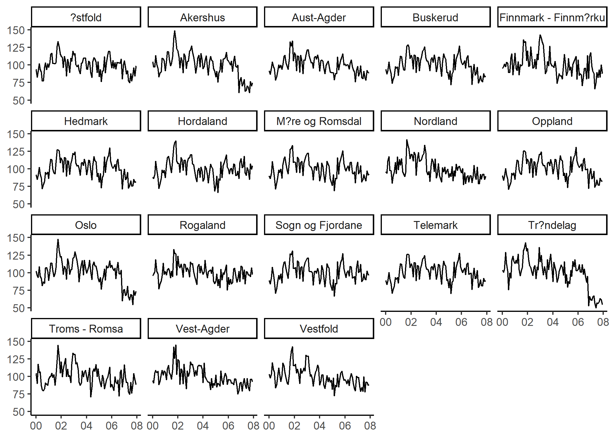
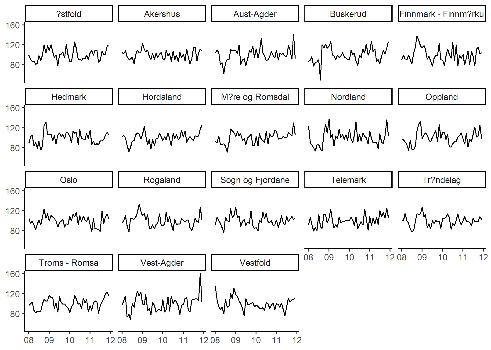

This project seeks to estimate local uncertainty in Norway using textual news data, and stems from my master thesis at the university of Oslo. It is inspired by the Economic Policy Uncertainty Index and the Financial News Index, in addition to several papers by Vegard H. Larsen and Leif Anders Thorsrud.
I use the national library of Norway's API to collect data about the use of uncertainty words over time. Because of limitations to the API, this project uses monthly word counts for each paper, compared to the full newspaper database used in my thesis.
 